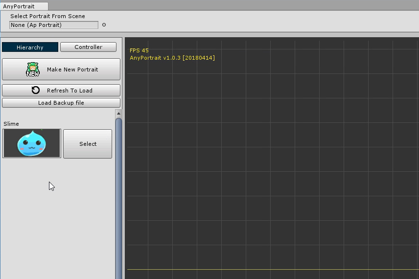

AnyPortrait > 시작하기 > 1.10. 썸네일 만들기
1.10. 썸네일 만들기
1.0.3

AnyPortrait를 실행하면 화면 왼쪽에 선택 가능한 apPortrait 오브젝트들이 나옵니다.
하지만 이름만으로는 구분하기가 불편합니다.
만약 썸네일이 같이 표시된다면 구분하기 편리할 것입니다.

루트 유닛을 선택한 상태에서 썸네일을 만들 수 있습니다.
(1) Show Frame을 눌러서 캡쳐 영역이 나타나게 합니다. (기본적으로 켜진 상태입니다.)
(2) 캡쳐 영역 중 노란색 직사각형이 썸네일로 저장되는 영역입니다.
(3) Capture 탭을 선택합니다.
화면 캡쳐 도구 중에서 (4) Thumbnail을 선택합니다.

썸네일을 만드는 순서입니다.
(1) 캡쳐 영역을 설정합니다. 위치나 크기를 지정합니다. 썸네일의 배경색도 바꿀 수 있습니다.
(2) 썸네일 이미지가 저장될 경로를 지정합니다. 대상 경로는 Assets 폴더 내에 있어야 합니다.
(3) Make Thumbnail 버튼을 눌러서 썸네일을 저장합니다.

다시 에디터를 열면 만들어진 썸네일이 적용된 것을 보실 수 있습니다.
화면 캡쳐에 대해서는 관련 페이지에서 더 자세히 다루고 있습니다.